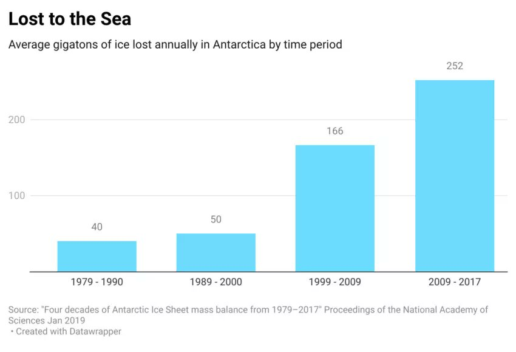
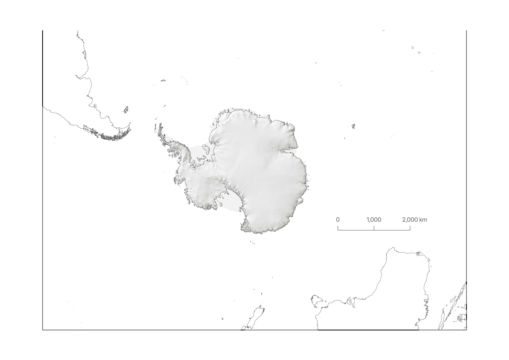
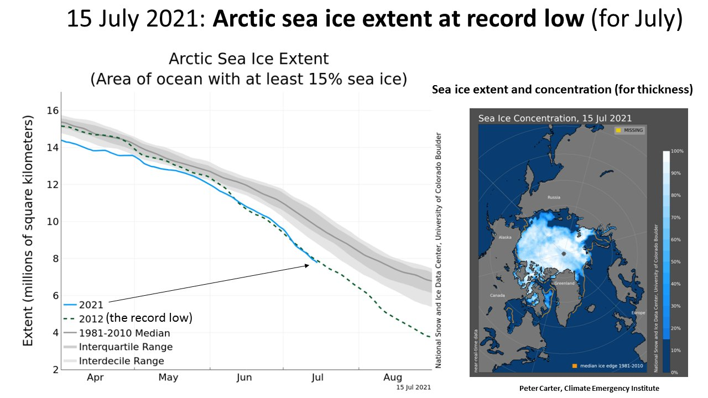

19 Ice Sheet
Most climate models are unrealistically insensitive to freshwater injected by melting ice. Ice sheet models are unrealistically lethargic in the face of rapid, large climate change.
James Hansen (2021) Foreword in DellaSala DA (ed). Conservation Science and Advocacy for a Planet in Peril. Amsterdam: Elsevier, 2021 (pdf) [(loc.pdf)[pdf/James_Hansen_2021_ForewordDellaSalaBook.pdf)
Ice sheet collapse is an exponential process.
Hansen (2023) PipelinePaper230705 (pdf)
19.1 Ice Melts
Ice Melts
Discussions between the first author (JEH) and field glaciologists 20 years ago revealed a frustration of the glaciologists with the conservative tone of IPCC’s assessment of ice sheets and sea level rise. One of the glaciologists said – regarding a photo of a moulin (a vertical shaft that carries meltwater to the base of the ice sheet) on Greenland – “the whole ice sheet is going down that damned hole!” Their concern was based on observed ice sheet changes and paleoclimate evidence of sea level rise by several meters in a century, which suggest that ice sheet collapse is an exponential process. Thus, as an alternative to the IPCC approach that relies on ice sheet models coupled to atmosphere-ocean GCMs (global climate models), a study was made that avoided use of an ice sheet model, as described in the paper Ice Melt. 14 In the GCM simulation, a growing amount of freshwater was added to the ocean surface mixed layer around Greenland and Antarctica, with the flux in the early 21 st century based on estimates from in situ glaciological studies and satellite observations of sea level trends near Antarctica. Doubling times of 10 and 20 years were used for the growth of freshwater flux. One merit of the GCM used in Ice Melt was its reduced, more realistic, small-scale ocean mixing, with a result that Antarctic Bottom Water in the model was formed close to the Antarctic coast 14 as it is in the real world. Continued growth of GHG emissions and meltwater led to shutdown of the North Atlantic and Southern Ocean overturning circulations, amplified warming at the foot of the ice shelves that buttress the ice sheets, and other feedbacks consistent with “nonlinearly growing sea level rise, reaching several meters over a time scale of 50-150 years.” 14 This paper exposed urgency to understand the dynamical change and the climate chaos that would occur with ice sheet collapse, a situation that may have occurred during the Eemian period when it was about as warm as today, as discussed in the Ice Melt paper. That period has potential to help us understand how close we are to a point of no return and sea level rise of several meters.
Ice Melt was blackballed from IPCC’s AR6 report, which is a form of censorship, 15 as alternative views normally are acknowledged in science. Science grants ultimate authority to nature. In the opinion of JEH, IPCC is comfortable with gradualism and does not want its authority challenged.
Concern about locking in nonlinearly growing sea level rise is amplified in our present paper by the revelation that the equilibrium response to current atmospheric composition is a nearly ice-free Antarctica. Portions of the ice sheets well above sea level may be recalcitrant to rapid change, but enough ice is in contact with the ocean to provide of the order of 25 m (80 feet) of sea level rise. The implication is that if we allow a few meters of sea level rise, that may lock in a much larger sea level rise.
Hansen
The two major feedbacks expected to darken Earth as the planet warms are reduced sea ice cover and reduced cloud cover. The recent spike of absorbed solar radiation to almost 3 W/m2 may be related in part to the fact that it occurred during the season when solar insolation was rising in the region of Southern Hemisphere sea ice when sea ice cover was at its lowest point in the period of satellite data. Large variability of clouds, unforced and forced, complicates interpretation of anomalies, but spatial variations may help untangle the situation.
Feedbacks associated with ice melt are particularly important for reasons discussed in our Ice Melt paper (that’s the paper blackballed by IPCC because it disagrees with IPCC about the imminent threat of shutdown of the overturning ocean circulations and large sea level rise). We find in that paper that freshwater injection into the ocean mixed layer by melting polar ice is already a significant climate forcing that acts to slow down the production of deepwater in the North Atlantic and production of bottom water in the Southern Ocean.
Moreover, this freshwater injection drives a crucial climate feedback that any lay person can understand. The freshwater injection – in the form of glacial meltwater and icebergs – cools the ocean surface creating a heat sink, as a large amount of energy is needed to melt the ice. This heat sink and cool ocean surface increase Earth’s energy imbalance. As shown in Ice Melt, this increase of Earth’s energy imbalance provides energy to melt ice faster.
Hansen (2023) Groundhog Day. Another Gobsmackingly Bananas Month. What’s Up?
19.2 Greenland
Abstract Noel
Under anticipated future warming, the Greenland ice sheet (GrIS) will pass a threshold when meltwater runoff exceeds the accumulation of snow, resulting in a negative surface mass balance (SMB < 0) and sustained mass loss.
Here we dynamically and statistically downscale the outputs of an Earth system model to 1 km resolution to infer that a Greenland near‐surface atmospheric warming of 4.5 ± 0.3 °C—relative to pre‐industrial—is required for GrIS SMB to become persistently negative.
Climate models from CMIP5 and CMIP6 translate this regional temperature change to a global warming threshold of 2.7 ± 0.2 °C. Under a high‐end warming scenario, this threshold may be reached around 2055, while for a strong mitigation scenario it will likely not be passed. Depending on the emissions scenario taken, our method estimates a 6‐13 cm sea level rise from GrIS SMB in the year 2100.
Noel (2021) Greenland Ice Sheet Loss (pdf)
Boers Significance
It has been suggested that, in response to anthropogenic global warming, the Greenland Ice Sheet may reach a tipping point beyond which its current configuration would become unstable. A crucial nonlinear mechanism for the existence of this tipping point is the positive melt-elevation feedback: Melting reduces ice sheet height, exposing the ice sheet surface to warmer temperatures, which further accelerates melting. We reveal early-warning signals for a forthcoming critical transition from ice-core-derived height reconstructions and infer that the western Greenland Ice Sheet has been losing stability in response to rising temperatures. We show that the melt-elevation feedback is likely to be responsible for the observed destabilization. Our results suggest substantially enhanced melting in the near future.
Boers Abstract
The Greenland Ice Sheet (GrIS) is a potentially unstable component of the Earth system and may exhibit a critical transition under ongoing global warming. Mass reductions of the GrIS have substantial impacts on global sea level and the speed of the Atlantic Meridional Overturning Circulation, due to the additional freshwater caused by increased meltwater runoff into the northern Atlantic. The stability of the GrIS depends crucially on the positive melt-elevation feedback (MEF), by which melt rates increase as the overall ice sheet height decreases under rising temperatures. Melting rates across Greenland have accelerated nonlinearly in recent decades, and models predict a critical temperature threshold beyond which the current ice sheet state is not maintainable. Here, we investigate long-term melt rate and ice sheet height reconstructions from the central-western GrIS in combination with model simulations to quantify the stability of this part of the GrIS. We reveal significant early-warning signals (EWS) indicating that the central-western GrIS is close to a critical transition. By relating the statistical EWS to underlying physical processes, our results suggest that the MEF plays a dominant role in the observed, ongoing destabilization of the central-western GrIS. Our results suggest substantial further GrIS mass loss in the near future and call for urgent, observation-constrained stability assessments of other parts of the GrIS.
Boers (2021) Western Greenland Ice Sheet is close to a tipping point
19.3 Antarctica
Antarctica is larger than the US + Mexico and covered by an ice sheet several miles/km thick +80% of all global fresh water!).

Early IPCC reports said Antarctica would be stable for a thousand years. But, back in 2007, Richard Alley (Penn State) said it’s already melting 100 years ahead of schedule. Hunziker (2023) The Truth About IPCC Reports
19.3.1 Sea-level Rise from Antarctica
If it all melted, would raise global sea levels by 57 metres
DeConto Abstract
The Paris Agreement aims to limit global mean warming in the twenty-first century to less than 2 degrees Celsius above preindustrial levels, and to promote further efforts to limit warming to 1.5 degrees Celsius. The amount of greenhouse gas emissions in coming decades will be consequential for global mean sea level (GMSL) on century and longer timescales through a combination of ocean thermal expansion and loss of land ice. The Antarctic Ice Sheet (AIS) is Earth’s largest land ice reservoir (equivalent to 57.9 metres of GMSL), and its ice loss is accelerating4. Extensive regions of the AIS are grounded below sea level and susceptible to dynamical instabilities5,6,7,8 that are capable of producing very rapid retreat. Yet the potential for the implementation of the Paris Agreement temperature targets to slow or stop the onset of these instabilities has not been directly tested with physics-based models. Here we use an observationally calibrated ice sheet–shelf model to show that with global warming limited to 2 degrees Celsius or less, Antarctic ice loss will continue at a pace similar to today’s throughout the twenty-first century. However, scenarios more consistent with current policies (allowing 3 degrees Celsius of warming) give an abrupt jump in the pace of Antarctic ice loss after around 2060, contributing about 0.5 centimetres GMSL rise per year by 2100—an order of magnitude faster than today. More fossil-fuel-intensive scenarios result in even greater acceleration. Ice-sheet retreat initiated by the thinning and loss of buttressing ice shelves continues for centuries, regardless of bedrock and sea-level feedback mechanisms or geoengineered carbon dioxide reduction. These results demonstrate the possibility that rapid and unstoppable sea-level rise from Antarctica will be triggered if Paris Agreement targets are exceeded.
Abrupt Jump in Ice Loss around 2060
The world faces a situation where there is an “abrupt jump” in the pace of Antarctic ice loss around 2060.
The oceans would have to cool back down before the ice sheet could heal, which would take a very long time. On a societal timescale it would essentially be a permanent change.
This tipping point for Antarctica could be triggered by a global temperature rise of 3C (5.4F) above the preindustrial era feasible by 2100 under governments’ current policies.
These ice shelves won’t be able to just grow back.
Antarctica is being winnowed away by a warming atmosphere as well as the heating oceans, with warming seawater entering crevasses and gnawing away at “pinning points” that hold enormous bodies of ice to submerged bedrock. A rapid acceleration of melting could cause a cascading effect where huge amounts of ice and water flow uninterrupted into the Southern Ocean. Once in motion, the impacts from such dramatic ice loss would unfurl over centuries.
19.3.2 Amundsen Sea ice-shelf melting
Naughten Abstract
Ocean-driven melting of floating ice-shelves in the Amundsen Sea is currently the main process controlling Antarctica’s contribution to sea-level rise. Using a regional ocean model, we present a comprehensive suite of future projections of ice-shelf melting in the Amundsen Sea. We find that rapid ocean warming, at approximately triple the historical rate, is likely committed over the twenty-first century, with widespread increases in ice-shelf melting, including in regions crucial for ice-sheet stability. When internal climate variability is considered, there is no significant difference between mid-range emissions scenarios and the most ambitious targets of the Paris Agreement. These results suggest that mitigation of greenhouse gases now has limited power to prevent ocean warming that could lead to the collapse of the West Antarctic Ice Sheet.
Naughten Implications
Our simulations present a sobering outlook for the Amundsen Sea. Substantial ocean warming and ice-shelf melting is projected in all future climate scenarios, including those considered to be unrealistically ambitious. A baseline of rapid twenty-first-century ocean warming and consequent sea-level rise appears to be committed. This warming is primarily driven by an acceleration of the Amundsen Undercurrent transporting warmer CDW onto the continental shelf. Basal melting increases across all ice shelves in the Amundsen Sea, including in regions providing critical buttressing to the grounded ice sheet.
19.3.3 Thwaites
Voosen
An alarming crackup has begun at the foot of Antarctica’s vulnerable Thwaites Glacier, whose meltwater is already responsible for about 4% of global sea level rise. An ice sheet the size of Florida, Thwaites ends its slide into the ocean as a floating ledge of ice 45 kilometers wide. But now, this ice shelf, riven by newly detected fissures on its surface and underside, is likely to break apart in the next 5 years or so, scientists reported today at a meeting of the American Geophysical Union.

The Thwaites Eastern Ice Shelf (TEIS) buttresses one third of Thwaites Glacier. Removal of TEIS has the potential to increase the contribution of Thwaites Glacier to sea level rise by up to 25%. Recent research shows that the ice shelf is losing its grip on a submarine shoal that acts as a pinning point and the shear margin that separates TEIS from the Thwaites Glacier Tongue has extended, further weakening the TEIS connection to the pinning point. A sequence of Sentinel-1 radar imagery shows that parallel wing and comb cracks have recently formed rifts at high angles to the main shear margin and are propagating into the central part of the ice shelf at rates as high as 2km per year. We use satellite data, ground-penetrating radar, and GPS measurements to suggest that final collapse of Thwaites Glacier’s last remaining ice shelf may be initiated by intersection of rifts with hidden basal crevasse zones within as little as 5 years.
The central part of TEIS has no obvious surface crevasses and smooth surface topography, except for the surface expression of a pronounced basal channel aligned parallel to ice flow. Despite this smooth surface, ground-penetrating radar shows a weak zone of thin ice and complex basal topography, including numerous basal crevasses, that is not in local hydrostatic equilibrium. This local disequilibrium suggests the presence of elevated vertical shear stresses that further weaken this critical part of the ice shelf. GPS stake network observations show no measurable regional strain in the horizontal plane because large-scale flow is being accommodated by the lateral shear margin.
In the near future, the propagating rifts are likely to intersect this weak zone, triggering rifting along the basal crevasses and, subsequently, along the basal channel and a into secondary set of basal crevasses on the eastern side of the basal channel. This ``zigzag’’ rift sequence would disconnect the main flow from the influence of the pinning point (and compressive arches) and will ultimately lead to a complete disintegration of the ice shelf.
Voosen (2021) Ice shelf holding back keystone Antarctic glacier within years of failure
19.3.4 Gyre Ross
Voosen
Unlike fast-shrinking Arctic sea ice, the sea ice ringing Antarctica seemed more resistant to climate change—until recently. But now a long-term decline may have set in, and it could have unexpected and ominous domino effects, according to several recent studies. Dwindling sea ice could strengthen a whirling current called the Ross Gyre, bringing warm waters closer to land and hastening the collapse of the West Antarctic ice sheet, which locks up enough water to raise global sea levels by 3.3 meters. The warmer water and glacial melt expected from a stronger gyre already show hints of slowing part of the global ocean’s overturning circulation, a critical “conveyor belt” of currents that distributes heat and removes carbon dioxide from the atmosphere.
Although climate models predict an eventual decline in Antarctic sea ice, the ice cover was actually expanding slightly until a decade ago. Then from 2014 to 2017, the ice began to vanish rapidly, losing more in 3 years than the Arctic had lost in 3 decades. The ice rebounded for a few years, then resumed its downward march, reaching record lows last year and again this year.
This erratic behavior makes it difficult to know whether the ice’s long-term decline has begun in earnest. In some regions—including the seas off West Antarctica—a decline is already unmistakable.
In these waters, hidden beneath sea ice, spins the 1000-kilometer-wide Ross Gyre, fed by warm currents from farther north. As sea ice thinned, the force of surface winds on newly exposed water strengthened the gyre and expanded it.The larger gyre brought warm water closer to the glaciers of West Antarctica, which spill out into the ocean as ice shelves and are vulnerable to melting from below. Within 30 years of its expansion, the gyre could warm the waters beneath the glaciers by 1°C — an unprecedented heat wave that would accelerate erosion of the ice.
Most alarming, the gyre expanded even in scenarios where greenhouse emissions dropped and climate warming slowed. As soon as the sea ice started to decline in the model, the expansion occurred. It’s out of control now because of what humans have already done.
As the gyre expands, it would also send warm water and freshwater from the melting glaciers away from the ice shelves and toward the Ross Sea, where they could disrupt a process called bottom water formation. Sea ice continually forms and blows away in the Ross Sea. Enriched in salt expelled by the ice and exposed to the frigid wind, the surface waters grow heavy enough to sink into the abyss. This bottom water “factory” is one of the engines for the global overturning circulation, the large-scale flows that shuttle heat and nutrients throughout the world’s ocean basins, while also sequestering carbon dioxide in the deep sea.
Arrays of robotic Deep Argo floats, which sink into the depths and then surface to transmit data, have found that these bottom waters have started to warm, according to a study published last year. Moreover, a 63-year record from the Ross Sea, also published in 2022, found that waters close to the surface had steadily become less dense. Both effects could contribute to the faltering of the bottom-water factory and the overturning circulation.
Oceanographers have similar worries about a more famous part of the overturning circulation, in the Atlantic Ocean, but they have not yet detected any weakening in modern observations. But the change in the Southern Ocean is clear, says Sang-Ki Lee, a physical oceanographer at the National Oceanic and Atmospheric Administration’s Atlantic Oceanographic and Meteorological Laboratory. Using a climate model calibrated by historical ocean measurements, Lee and his colleagues found that the lower part of the overturning circulation has weakened by up to 20% since the 1970s.
As sea ice declines and the gyre expands, Antarctic bottom water formation could slow further. Late last month in Nature, a group led by Qian Li, a physical oceanographer at the Massachusetts Institute of Technology, published a new high-resolution ocean model predicting that, by 2050, the lower cell of the overturning circulation will have weakened by 40% from present times due to increased meltwater. And that means the ocean’s ability to mitigate climate change by soaking up nearly one-third of humanity’s annual carbon emissions could falter as well.
Voosen (2023) Dwindling sea ice may speed melting of Antarctic glaciers
19.4 Arctic Sea Ice
ARCTIC SEA ICE AT RECORD LOW for this time of year. This is an enormous source of amplifying feedback. Losing the remaining Arctic sea ice and its reflection of solar energy back to space would be equivalent to another one trillion tons of CO2.

19.5 Ice Sheet Collapse
Guardian
Ice sheets can collapse into the ocean in spurts of up to 600 metres (2,000 feet) a day, a study has found, far faster than recorded before.
Scientists said the finding, based on sea floor sediment formations from the last ice age, was a “warning from the past” for today’s world in which the climate crisis is eroding ice sheets.
Guardian (2023) Ice sheets can collapse at 600 metres a day, far faster than feared
Batchelor Abstract
Rates of ice-sheet grounding-line retreat can be quantified from the spacing of corrugation ridges on deglaciated regions of the seafloor1,2, providing a longterm context for the approximately 50-year satellite record of ice-sheet change3–5. However, the few existing examples of these landforms are restricted to small areas of the seafloor, limiting our understanding of future rates of grounding-line retreat and, hence, sea-level rise. Here we use bathymetric data to map more than 7,600 corrugation ridges across 30,000 km2 of the mid-Norwegian shelf. The spacing of the ridges shows that pulses of rapid grounding-line retreat, at rates ranging from 55 to 610 m day−1, occurred across low-gradient (±1°) ice-sheet beds during the last deglaciation. These values far exceed all previously reported rates of grounding-line retreat across the satellite3,4,6,7 and marine-geological1,2 records. The highest retreat rates were measured across the flattest areas of the former bed, suggesting that near-instantaneous ice-sheet ungrounding and retreat can occur where the grounding line approaches full buoyancy. Hydrostatic principles show that pulses of similarly rapid grounding-line retreat could occur across low-gradient Antarctic ice-sheet beds even under present-day climatic forcing. Ultimately, our results highlight the often-overlooked vulnerability of flat-bedded areas of ice sheets to pulses of extremely rapid, buoyancy-driven retreat.
Batchelor (2023) Rapid, buoyancy-driven ice-sheet retreat of hundreds of metres per day